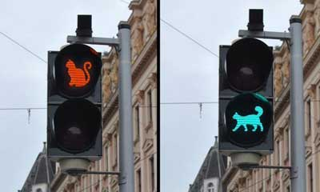
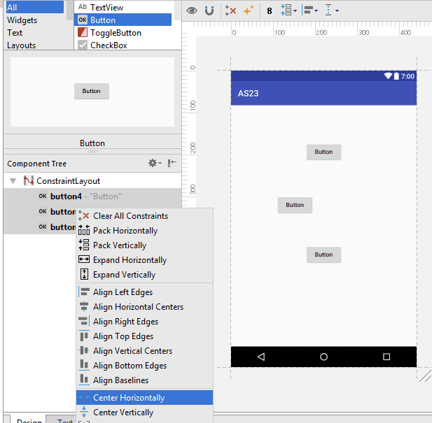
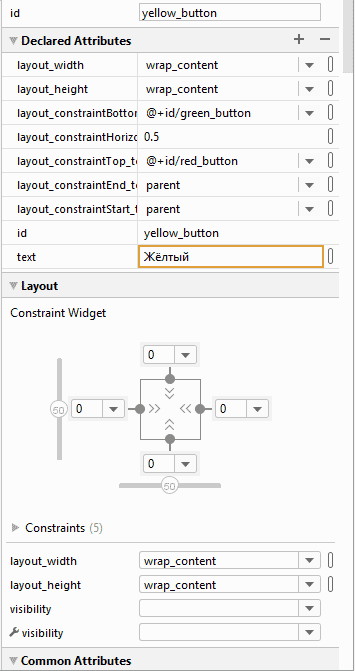
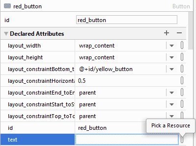
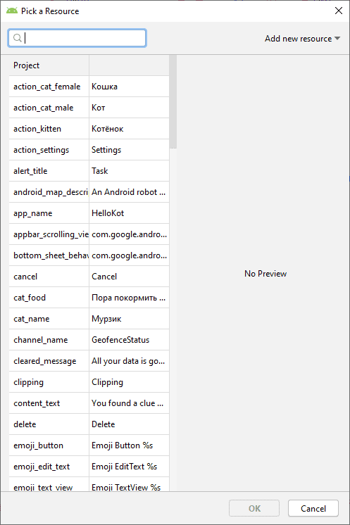
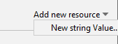
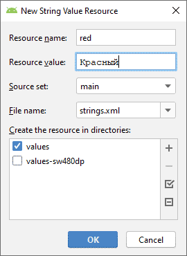
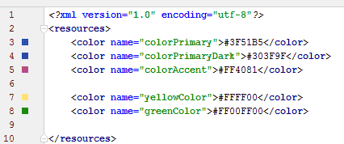
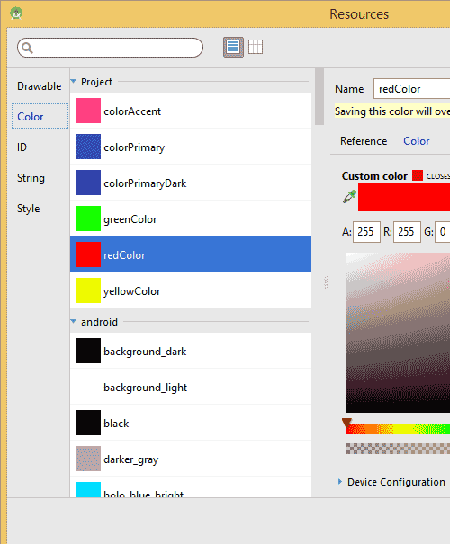
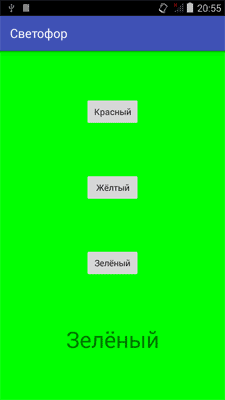

Смена цветов

Светофор
Для закрепления навыков создадим приложение чуть посложнее предыдущего, а также познакомимся с другими приёмами программирования.
В качестве примера напишем программу под условным названием «Светофор». Интерфейс программы будет выглядеть следующим образом. На красном экране расположены три кнопки и одна текстовая надпись. При нажатии кнопок фон программы будет меняться на соответствующий цвет, который закреплён за определённой кнопкой. Я попробую вам показать решение задачи с разных сторон, чтобы вы почувствовали себя увереннее.
Первые шаги вполне очевидны. Создаём новый проект на основе "Hello, World" и перетаскиваем с панели инструментов три кнопки. Когда будете размещать кнопку, попробуйте потаскать её по разным позициям внутри экрана активности. Вы будете замечать различные всплывающие линии, подсказывающие о стандартных отступах от края или о центральной оси по вертикали и горизонтали. Это удобно, когда вы точно знаете, где нужно разместить один компонент.
В нашем случае мы поступим иначе. Сначала просто перетащим три кнопки на экран, не думая о позиционировании. Далее в окне Component Tree выделяем три кнопки, удерживая клавишу Shift, вызываем контекстное меню и выбираем команды Center Horizontally и потом Center Vertically. Кнопки равномерно распределятся по экрану.

Контекстное меню можно вызвать и напрямую у кнопок на экране. Достаточно указателем мыши начертить ограничивающий прямоугольник вокруг всех кнопок и щёлкнуть правой кнопкой.
В окне Component Tree выделите строку button. У вас должно появиться окно свойств Properties. Давайте избавимся от стандартных идентификаторов, а будем сразу приучаться давать осмысленные имена. Например, для первой кнопки присвоим свойству id значение button_red вместо стандартного @+id/button
Для второй кнопки присвоим значение button_yellow.

Аналогично настраиваем третью кнопку button_green. Вы можете использовать другой стиль, например, назвать идентификатор как red_button вместо button_red. Главное, придерживаться выбранного стиля.
Строковые ресурсы
Теперь нам нужно заменить текст на кнопках на слова Красный, Жёлтый и Зелёный. На прошлом уроке мы просто присвоили свойству Text нужную строку. Но на самом деле это неправильный подход и даже среда разработки выводит предупреждающие значки у кнопок, если вы переключитесь в режим Text. По правилам, строки нужно хранить в строковых ресурсах. Подобный подход даёт разработчику множество преимуществ, в частности, быструю локализацию приложения. Считайте это стандартом, которого нужно придерживаться.
Процесс создания строковых ресурсов очень прост. Переключитесь обратно в режим Design и выберите кнопку button_red. В окне свойств найдите свойство text. Рядом находится кнопка. Щёлкните по ней, у вас откроется диалоговое окно Resources.


Нажмите на выпадающий список Add new resource для создания нового строкового ресурса и выберите New string Value.

В новом окне New String Value Resource в первом поле Resource Name введите название ресурса, например, red, а во втором поле Resource Value введите текст для кнопки (напр. Красный). Остальные поля не трогаем. Аналогичным образом поступите с другими двумя кнопками (Жёлтый и Зёленый).

Программно можно добиться такого же результата, отредактировав файл strings.xml, который находится в папке res/values вашего проекта. Сейчас он может выглядеть так.
<?xml version="1.0" encoding="utf-8"?>
<resources>
<string name="app_name">TrafficLight</string>
<string name="hello_world">Hello world!</string>
<string name="action_settings">Settings</string>
<string name="red">Красный</string>
<string name="yellow">Жёлтый</string>
<string name="green">Зелёный</string>
</resources>
Мы совсем забыли про элемент TextView. Исправим упущение. Разместим компонент под кнопками и снова сделаем выравнивание.
Пусть на нём выводится текст, извещающий о текущем цвете фона приложения. Так как в ресурсах у нас уже есть слова Красный, Жёлтый и Зелёный, изначально предназначенные для кнопок, то мы не будем создавать новые строковые ресурсы, а воспользуемся готовыми наработками. По умолчанию у нас используется красный цвет. В окне свойств выбираем свойство text для TextView и нажимаем кнопку рядом с ней для вызова знакомого диалогового окна. На этот раз мы не будем щёлкать на кнопке New Resource, а сразу выберем ресурс red, которая, как мы помним, содержит текст Красный и щёлкнем кнопку OK (можно сделать сразу двойной щелчок на строке).
Заодно расскажу о другой настройке под ней с изображением гаечного ключа и таким же названием text. Представьте себе, что в реальной программе изначально у TextView нет никакого текста, он будет сформирован позже программно. Но чтобы разработчик видел, как будет выглядеть дизайн экрана, ему нужно видеть текст на этапе проектирования. Для этих целей и предназначена вторая настройки для текста. Подобное вы можете увидеть и у других свойства компонента.
С текстом разобрались. Но где остальные настройки? В окне свойств Properties можно увидить все доступные атрибуты для компонента. Если вы не помните точное название, то воспользуйтесь поиском. Я помню, что для размера шрифта используется что-то со словом size. Вспомнил, это textSize. Выбираем нужное значение из выпадающего списка.
Рекомендую постоянно переключаться в режим Text и смотреть, что происходит в коде. Это позволит вам увереннее разбираться в коде и читать чужой код. Как правило, новички предпочитают работать через визуальные инструменты, а программисты с опытом самостоятельно пишут практически весь код. Нужно найти разумный баланс между двумя подходами. Всё придёт со временем.
Со строками вроде разобрались. Давайте теперь в ресурсах зададим цвета для фона программы. Ресурсы для цветов принято хранить в отдельном файле res/values/colors.xml, хотя технически никто не запрещает хранить их в том же файле strings.xml.
Откроем указанный файл и добавим ресурс жёлтого цвета между тегами resources:
<color name="yellowColor">#FFFF00</color>
Слева появится жёлтый квадрат, по нему легко видеть цвет заданного ресурса.
По такому же принципу добавьте зелёный цвет.
<color name="greenColor">#FF00FF00</color>

Самостоятельно добавьте ресурс для красного цвета под именем redColor.
Если вам знаком такой формат цвета, то трудностей добавление новых цветов подобным способом вам не доставит. Если нужно выбрать более сложный цвет, то проще воспользоваться мастером, как мы это делали в уроке "Hello Kitty", когда выбирали розовый цвет, а затем полученный цвет скопировать в ресурсы.
Определив в ресурсах все необходимые цвета, можно сразу присвоить красный цвет для контейнера ConstraintLayout. В окне свойств находим для данного элемента свойство background. Снова нажимаем кнопку, чтобы открыть диалоговое окно. В окне выбираем раздел Color и ищем свой ресурс redColor.

Если посмотреть в текстовом режиме, то увидите строчку android:background="@color/redColor" для тега ConstraintLayout.
Так как мы будем менять фон у ConstraintLayout, то присвоим ему идентификатор root_layout (корневой элемент разметки).
Общий каркас приложения завершён. У нас есть три кнопки с соответствующими текстами, текстовая надпись со словом Красный, и красный фон, используемый в контейнере ConstraintLayout. Пора приступать к программной логике программы. А пока можно запустить приложение, чтобы убедиться, что мы не сделали ошибок в разметке.
Код для программы (Kotlin)
Наша задача - обработать щелчки трёх кнопок и менять цвет фона приложения, а также текст в TextView.
Существуют разные способы для реализации задачи. Я решил показать несколько - и как менять текст (напрямую и из ресурсов) и как менять цвет (тоже из ресурсов и напрямую). Все они могут использоваться равноценно, вам нужно только решить, какой способ удобен и гибок при усложнении программы.
// Если этот код работает, его написал Александр Климов,
// а если нет, то не знаю, кто его писал.
package ru.alexanderklimov.trafficlight
import android.graphics.Color
import android.os.Bundle
import android.widget.Button
import android.widget.TextView
import androidx.appcompat.app.AppCompatActivity
import androidx.constraintlayout.widget.ConstraintLayout
class MainActivity : AppCompatActivity() {
override fun onCreate(savedInstanceState: Bundle?) {
super.onCreate(savedInstanceState)
setContentView(R.layout.activity_main)
val rootLayout: ConstraintLayout = findViewById(R.id.layout_root)
val textView: TextView = findViewById(R.id.textView)
val redButton: Button = findViewById(R.id.button_red)
val yellowButton: Button = findViewById(R.id.button_yellow)
val greenButton: Button = findViewById(R.id.button_green)
redButton.setOnClickListener {
textView.text = "Красный"
root_layout.setBackgroundColor(resources.getColor(R.color.redColor, null))
}
yellowButton.setOnClickListener {
textView.setText(R.string.yellow)
root_layout.setBackgroundColor(ContextCompat.getColor(this, R.color.yellowColor))
}
greenButton.setOnClickListener {
textView.text = resources.getText(R.string.green)
root_layout.setBackgroundColor(Color.GREEN)
}
}
}
